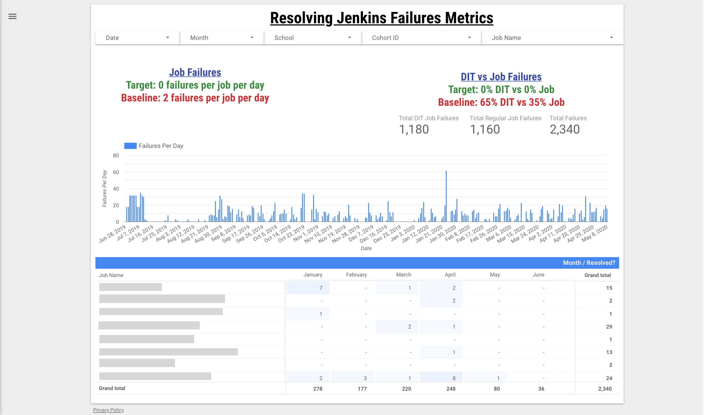

Welcome, I'm D'Shea
I perform analysis, improve products, standardize operations and delight people
About Me
I am a product manager with experience in agile software development at a startup education technology company. My professional experience spans across business analysis, product operations, content management and customer service.
Strengths
Gallup CliftonStrengths: Futuristic, Relator, Individualization, Achiever, Ideation
Fascination Advantage: Maverick Leader; Innovation + Power
Technical Skills
- Front End Web Development: HTML 5, CSS 4, Bootstrap 4+, Javascript
- Back End Development: SQL
- Other: Adobe XD, Google Apps Script, Spreadsheets (Google Sheets, Microsoft Excel)
Education
City University of New York: Baruch College; Bachelor of Business Administration (BBA), Accounting
Continuing Education
Portfolio
One of my responsibilities as an Operations Manager was to ensure that quality school schedules were sent in time for teacher and student consumption. One example of a metric that I created and tracked was the failure rates of jobs that ran in our operational workflows. This was an important metric to track as team members who spent time resolving job failures had less time to perform checks to ensure schedules were meeting other quality metrics.
I used the following tracker I built in Google Data Studio to proactively predict spikes in failures (based on historical data) and to be aware of an increasing trend of failures for particular jobs. This was extremely helpful in identifying high priority product fixes for technology/engineering teams.
Please note that job names are concealed to protect company confidentiality
The Product Operations team at my organization had a poor user experience with modifying necessary inputs for our scheduling algorithm. The process involved changing a setting permanently and then removing it to accomplish making a one-time temporary setting.
I worked with my fellow product team members and engineers to write requirements for a new implementation for a temporary override setting. The first image below is a flowchart of the back end and a prototype of its front end implementation. Although this has a crude UI, I chose this implementation as stakeholders indicated that this was an urgent need due to an increase in errors that affected end users.
The second image shows a wireframe of the next iteration of the planned tool that allows users to make permanent and temporary overrides with proper validation and visual indications for errors/warnings.
The Product Operations team at my organization used a combination of raw data and manual entries to monitor and manage daily operations. The manual nature of their operations caused longer work times and an increased possibility of errors. The primary reason for the slow downs in work was due to managers searching for the current status of a key process step by asking associates how far they were in the process. The associates needed to scan raw data to know when they needed to execute their work and would manually update a report when complete.
In a collaborative effort with an engineer, I came up with a few different designs before settling on the first automated iteration of our report. A primary driver of the final design and execution was the time restriction for when the team needed the report to be live.
The report ended up being so successful that it's commonly used during key office tours; see the 2nd iteration of the report on the top left screen in this photo here.